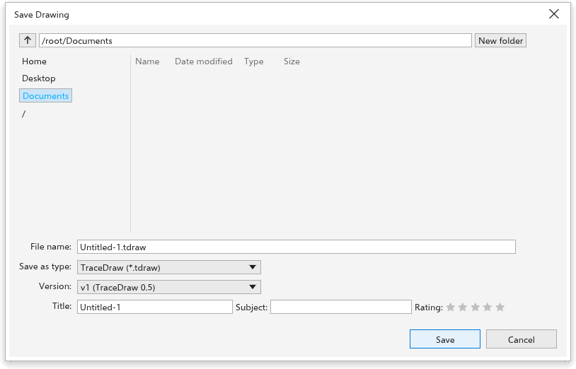
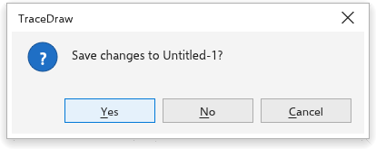

Abrir e salvar desenhos
O TraceDraw salva os desenhos no próprio formato, .tdraw, que guarda tudo, e também pode salvar arquivos .cdr. Ele abre muitos outros formatos; veja Formatos de arquivo compatíveis.
Abrir um desenho
- Escolha Arquivo > Abrir (Ctrl+O) ou clique em Abrir na barra de ferramentas padrão.
- Escolha o arquivo e confirme.
O desenho abre em uma nova guia. Para abrir um desenho usado recentemente, use Arquivo > Abrir recente, a seta do botão Abrir ou a lista da Tela de boas-vindas; Limpar lista esvazia a lista. Para tirar só um desenho da lista da Tela de boas-vindas, aponte para ele e clique no x à direita, ou clique nele com o botão direito e escolha Remove from list; o arquivo continua onde está. Arquivo > Importar (Ctrl+I) acrescenta o conteúdo de um arquivo ao desenho aberto; veja Importar arquivos.
Você também pode arrastar arquivos do gerenciador de arquivos para o TraceDraw. Um desenho (como um arquivo .tdraw ou .cdr) solto sobre a barra de título, os menus, as barras de ferramentas ou as guias de documentos abre em uma guia própria; solto sobre a janela de desenho, é importado no desenho aberto. A moldura e o rótulo mostrados durante o arraste dizem o que vai acontecer. Onde o sistema não informa onde está o ponteiro (Linux, macOS), desenhos abrem em uma guia e imagens são importadas.
Como um desenho aparece primeiro (a página inteira, seus objetos, a largura da página, o tamanho real, ou a página, a posição e o zoom que tinha ao ser salvo) é definido em View when a drawing opens, na página Exibição de Ferramentas > Opções > TraceDraw.
Avisos depois de abrir
Quando alguns objetos de um arquivo aberto não puderam ser lidos, ou o desenho usa fontes que não estão instaladas no seu computador, o TraceDraw avisa depois que o arquivo abre:
- Para objetos que não puderam ser lidos, uma mensagem informa quantos são. Um botão Relatar abre um novo problema para o arquivo no rastreador do projeto, para que seja corrigido.
- Para fontes ausentes, a caixa de diálogo Missing Fonts lista cada uma com a fonte instalada que a desenha e deixa você escolher outra para esta sessão ou substituí-la no desenho. Veja Fontes ausentes.
Marque Não mostrar esta mensagem novamente para não ver mais esses avisos. Você pode reativá-los na página Avisos de Ferramentas > Opções > Global.
Salvar um desenho
Escolha Arquivo > Salvar (Ctrl+S) para gravar o desenho de volta no seu arquivo. Um desenho novo, ou aberto de um formato que o TraceDraw só lê, ainda não tem arquivo, então Salvar abre a caixa de diálogo Salvar desenho.
Salvar como
Arquivo > Salvar como (Ctrl+Shift+S) salva o desenho com outro nome, em outra pasta ou em outro formato.

Para salvar um desenho com um nome novo:
- Escolha a pasta. A lista à esquerda tem atalhos para Início, Área de trabalho, Documentos, Downloads e Imagens, e para as unidades. Subir um nível vai para a pasta acima; você também pode digitar uma pasta na barra de caminho. Clique duas vezes em uma pasta da lista para abri-la; clique em um arquivo para usar o nome dele.
- Digite o Nome do arquivo. A extensão do tipo escolhido é acrescentada.
- Escolha Salvar como tipo: TraceDraw (
*.tdraw) ou Arquivos CDR (*.cdr). - Escolha a Versão. Para arquivos TraceDraw, é a versão do formato, da mais nova para a mais antiga. Para arquivos
.cdr, é a versão do arquivo, de 27 até 7; um programa mais antigo só abre uma versão tão antiga quanto ele ou mais. A versão escolhida fica com o desenho, então Salvar a grava de novo sem perguntar. - Escolha o que vai no arquivo junto com o desenho:
- Para arquivos
.cdra partir da versão 16, Incluir perfil de cor guarda o perfil CMYK do desenho no arquivo. - Incluir fontes (desligado de início) guarda as fontes que o texto usa, quando a licença permite, em arquivos TraceDraw e em arquivos
.cdra partir da versão 16. A caixa mostra quanto as fontes acrescentam ao arquivo. Marque-a para desenhos que vão para um computador que talvez não tenha as fontes. Uma nota abaixo da caixa nomeia as fontes que o arquivo não vai levar e por quê: a licença proíbe incorporar, ou não há arquivo de fonte para incorporar (o texto é desenhado por uma fonte substituta, ou a fonte está num arquivo de coleção). - Para arquivos TraceDraw no computador, Package salva o desenho em uma pasta com o nome dele, com as imagens vinculadas, os arquivos de fonte e um relatório, e Include a PDF acrescenta um PDF. Veja Empacotar um desenho.
- Para arquivos
Essas escolhas são lembradas para a próxima vez.
- Se quiser, preencha Título, Assunto e uma Classificação (clique de novo na última estrela acesa para tirá-la). São as propriedades do desenho, também mostradas em Propriedades do documento.
- Clique em Salvar ou pressione Enter. Se o arquivo já existir, o TraceDraw pergunta se deve Substituir.
A caixa de diálogo começa na pasta do desenho, senão na última pasta em que você salvou, senão na sua pasta de documentos. Um desenho aberto de um arquivo .cdr ou de outro formato começa na pasta desse arquivo, com o nome dele, então salvar no mesmo formato o substitui.
Na lista de arquivos, Nova pasta cria uma pasta e já deixa você digitar o nome; F2 ou um clique com o botão direito renomeia uma pasta ou arquivo; digitar letras pula para os itens que começam com elas, e Enter abre a pasta escolhida. Uma pasta digitada na barra de caminho é usada sem precisar pressionar Enter.
Outras formas de salvar: Arquivo > Salvar como modelo salva um modelo (veja Modelos), Exportar grava outros formatos (veja Exportar), Publicar em PDF grava um PDF (veja Publicar em PDF), Enviar para salva um PDF na área de trabalho ou na pasta de documentos ou o anexa a um e-mail, Package reúne o desenho, suas imagens e suas fontes em uma pasta (veja Empacotar um desenho), e GitHub guarda desenhos em um repositório do GitHub (veja GitHub). Reverter volta à versão salva por último.
Fechar desenhos
Escolha Arquivo > Fechar (Ctrl+F4), clique no botão de fechar da guia do desenho ou clique na guia com o botão do meio. Fechar tudo fecha todos os desenhos, e Sair (Alt+F4) fecha o TraceDraw.
Quando um desenho tem alterações não salvas, o TraceDraw pergunta se deve salvá-las antes: Sim salva (pedindo um nome se o desenho ainda não tiver arquivo), Não fecha sem salvar e Cancelar mantém o desenho aberto. Quando vários desenhos têm alterações, ele pergunta sobre cada um; Cancelar interrompe.

Backup automático e recuperação
O TraceDraw guarda cópias de segurança dos desenhos abertos enquanto o backup automático estiver ativado (a página Salvar de Ferramentas > Opções > TraceDraw define a frequência e o local; a cada 20 minutos de início). Fechar o TraceDraw normalmente as remove.
Se o TraceDraw terminou sem fechar, por exemplo depois de uma queda de energia, ele oferece as cópias na próxima vez que iniciar: Recuperar abre cada uma como um desenho não salvo (Salvar então pergunta onde salvá-lo), e Descartar deixa as cópias na pasta. Duas janelas do TraceDraw abertas ao mesmo tempo nunca oferecem os desenhos uma da outra. Quando o sistema fecha o TraceDraw sem perguntar sobre desenhos não salvos (o Encerrar do menu do macOS, sair da sessão) ou manda o app para Android para o segundo plano, as cópias são gravadas na hora, e o próximo início as oferece.
Na versão para navegador as cópias ficam no armazenamento do navegador para o site, numa pasta própria de cada aba. Fechar ou recarregar uma aba com desenhos não salvos pergunta antes, e a próxima visita oferece o que a aba deixou; Descartar apaga essas cópias.